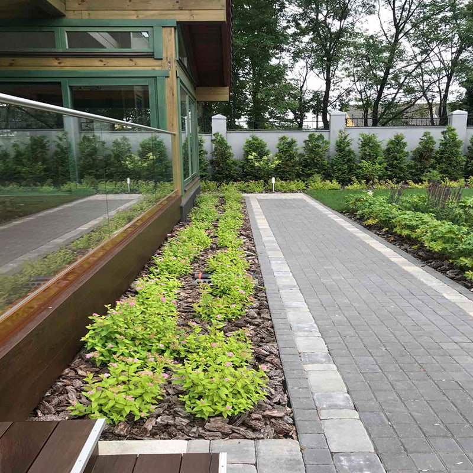
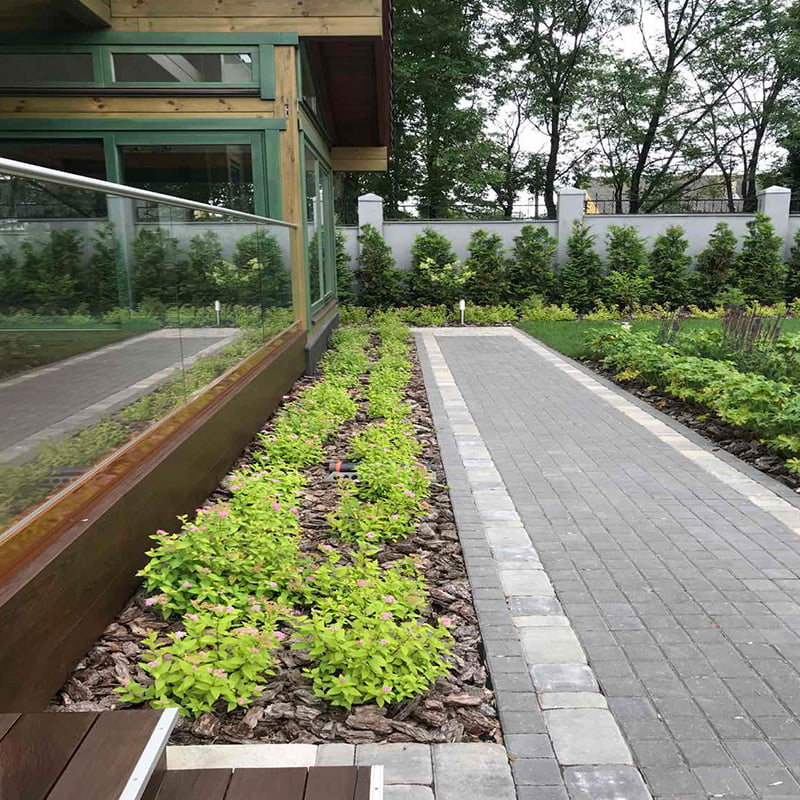
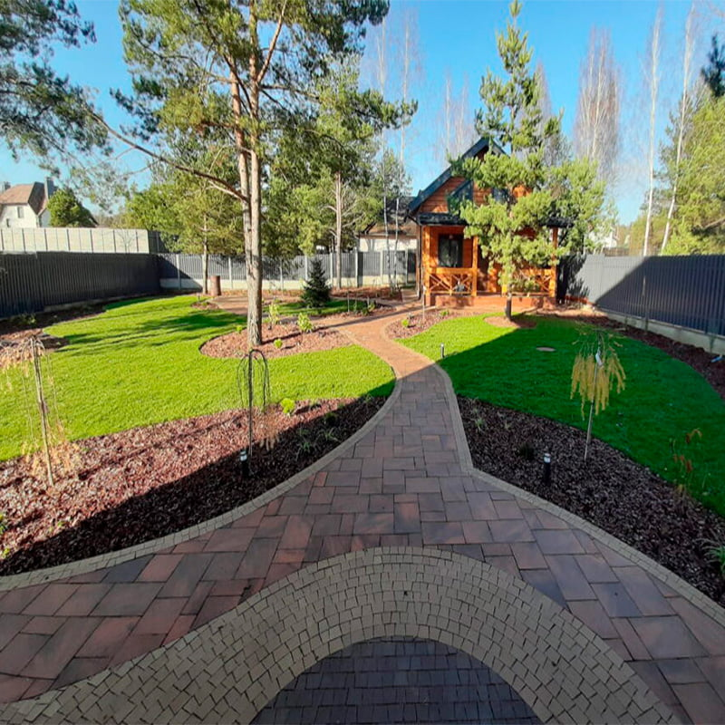
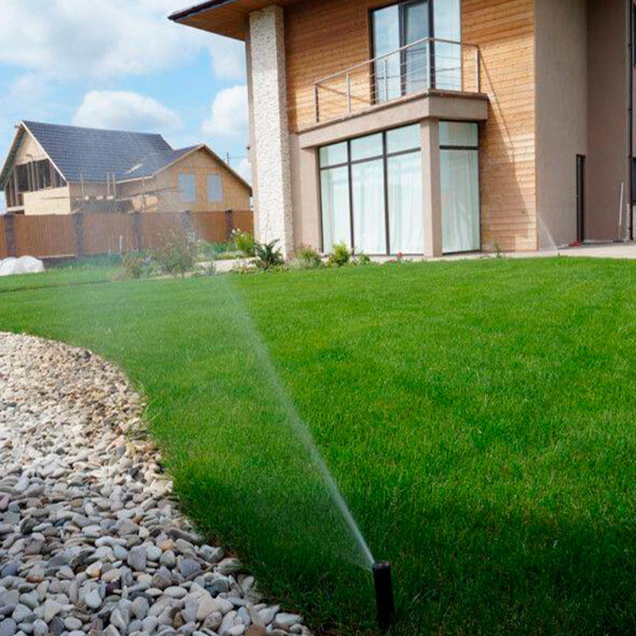
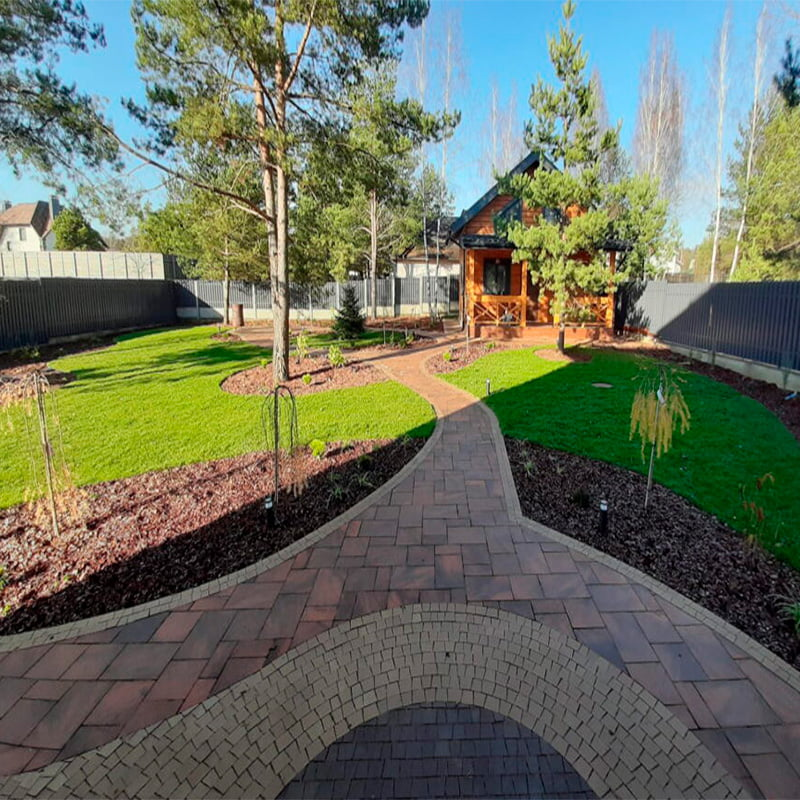
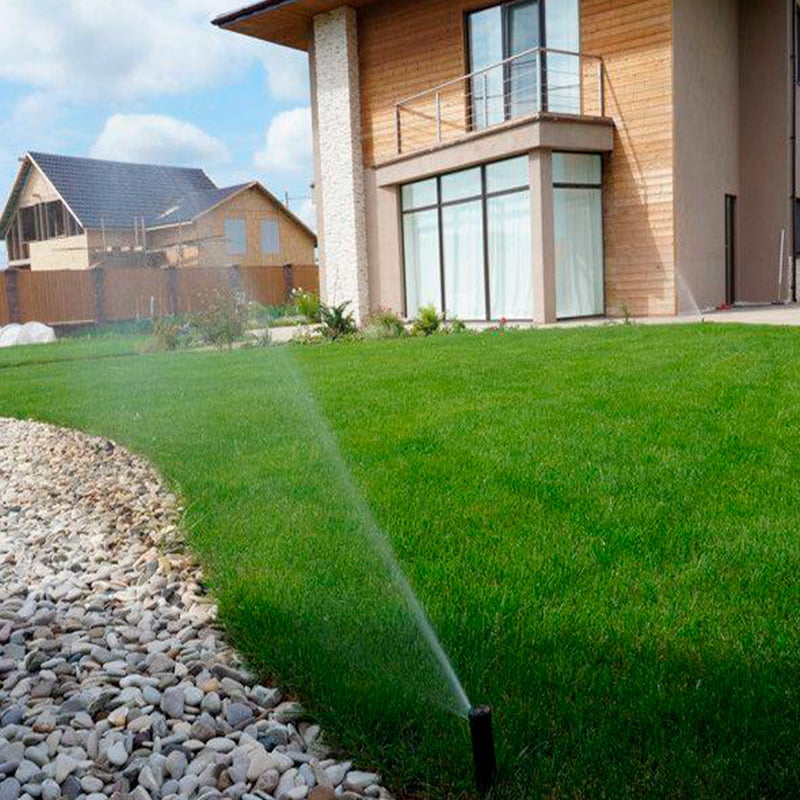
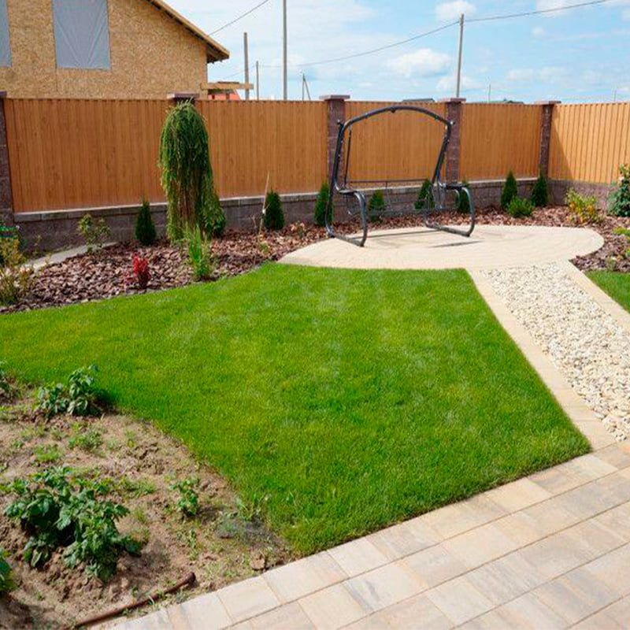
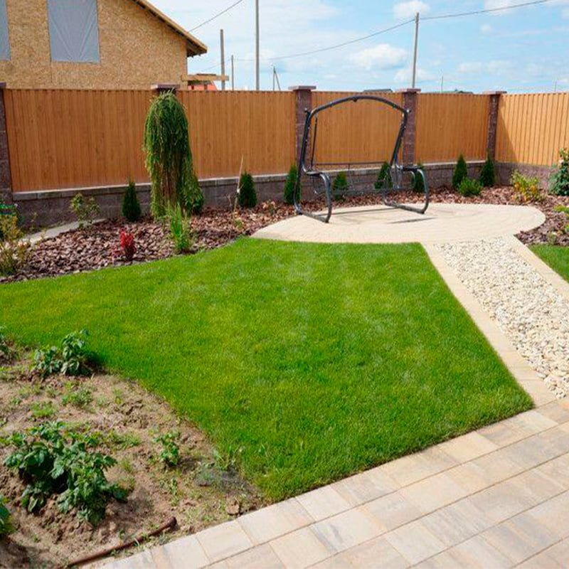

 




 



Ландшафтный дизайн играет ключевую роль в формировании социальных пространств. Открытые гостинные и природные бассейны становятся местами для общения и отдыха, способствуя укреплению общественных связей

Неоспоримая красота и эстетика ландшафтного дизайна делают его не только актуальным, но и вечным. Классические дачные сады, французские парки и английские сады адаптируются к современным требованиям, сохраняя свою привлекательность на десятилетия вперед.

Современный ландшафтный дизайн акцентирует внимание на экологичности и устойчивости к изменениям климата. Использование засухоустойчивых растений и создание экологически чистых садов становится не просто модной тенденцией, а необходимостью

Статистика показывает, что более 60% новых проектов ландшафтного дизайна включают элементы, способствующие сохранению биоразнообразия и поддержанию экосистемы. Это включает в себя создание мини-лугов, использование натуральных материалов и интеграцию органических огородов в общий дизайн